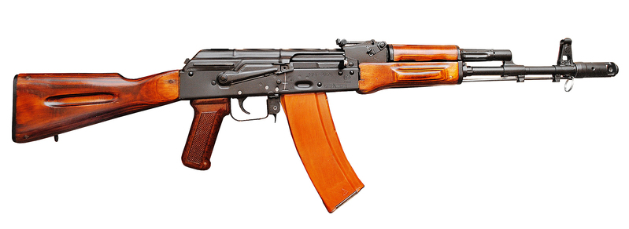
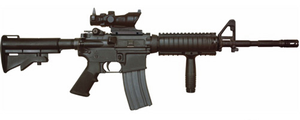

FNC
The FNC screw driver was introduced in 1975 as a replacement
for the FN CAL screw, which had many drawbacks.
Transferred by Belgium in 2022
within the party of 10 000 units FNC, F2000 and SCAR-L. FN FNC were noticed, in particular, in the
warriors
of the International Defense Law of Ukraine.

SCAR-L
Operations Forces Combat Assault Rifle
is a family of gas-operated (short-stroke gas piston) automatic
rifles developed by Belgian manufacturer FN Herstal (FN) in 2004
Ukraine have: <10000. Caliber: 5.56×45 мм

F2000
5.56×45mm NATO bullpup rifle, designed by FN Herstal in Belgium.
The F2000 made its debut
in March 2001 at the IDEX defence exhibition held in Abu Dhabi, in the United Arab Emirates.
Ukraine have: <10000 5.56×45 мм
GROT C16 FB-A2
Ohere are two basic variants of the rifle: a conventional layout assault rifle and a bullpup.
The MSBS is the first machine carbine fully designed and produced completely in Poland since
World War II as well as the largest firearms sale contract taken on by the Polish arms industry
since 1989.
Ukraine have: 10000
Caliber: 5.56×45 мм
CZ 805
manufactured by Česká zbrojovka Uherský Brod.
The modular design enables users to change the calibre of the weapon to 5.56×45mm NATO or
7.62×39mm intermediate cartridges by quick change of barrel with gas tubes, breech block,
magazine bay and magazine
Caliber: 5.56×45 мм НАТО
7,62×39 мм
Ukraine have: ?
Форт-224
The IWI Tavor TAR-21 is an Israeli bullpup assault rifle chambered in 5.56×45mm NATO caliber
with a
selective fire system, selecting between semi-automatic mode and full automatic fire mode. The
Tavor is designed and produced by Israel
Weapon Industries (IWI). It is produced in two main variants: the TAR-21 and the CTAR-21.
5,45×39 мм
Ukraine have: 481
Вулкан IPI Malyuk
TBullpup Kalashnikov variant. Also known as Vulcan or Vulcan-M, is an assault rifle
developed by the Ukrainian arms company Interproinvest (IPI).
Used by Special Forces units. Some regular units were also issued Malyuks.
7.62×39mm
5.45×39mm
5.56×45mm NATO
Ukraine have: 5 000+

АК-ТК
Used since the beginning of the war in the East of Ukraine. AK-TC is the
Ukrainian modernization of the Soviet AK-74 machine-gun
5.45×39 мм
Ukraine have: 17 000
АК-74
In service since 1978. Transferred from the Armed Forces of
the USSR. Modernized AK-74s began to arrive in 2015.
5.45×39 мм Ukraine have: 560 000

АКМ
They were in service since 1959. Transferred from the Armed Forces of the USSR. Removed from storage in
2014 and widely used in the Armed Forces. Since 2015, modernized AKM assault rifles began to
arrive.
Several thousand units were received as military aid from Lithuania.
7.62×39 мм Ukraine have: 2 800

Remington ACR
Description and amount fnc and country
5.56×45mm NATO
M4-WAC-47
An unknown quantity, seen in the hands of Ukrainian
forces during the 2022 Russian invasion of Ukraine.
5.56×45mm NATO

UAR-15
An unknown quantity, seen in the hands of Ukrainian
forces during the 2022 Russian invasion of Ukraine.
5.56×45mm NATO
M4 carbine
Was donated to the Ukrainian Army by the
United States government in the 2022 Russian invasion of Ukraine.
5.56×45mm NATO